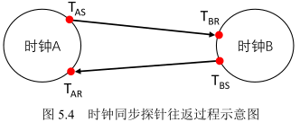
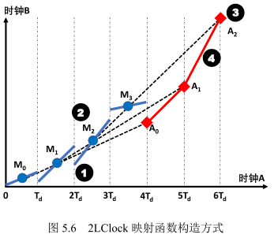
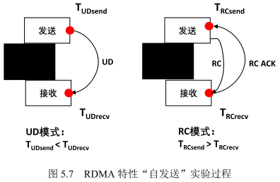
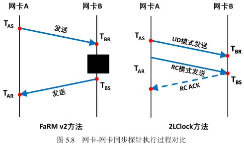
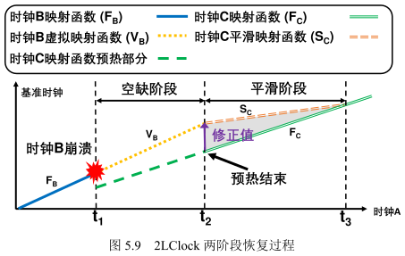
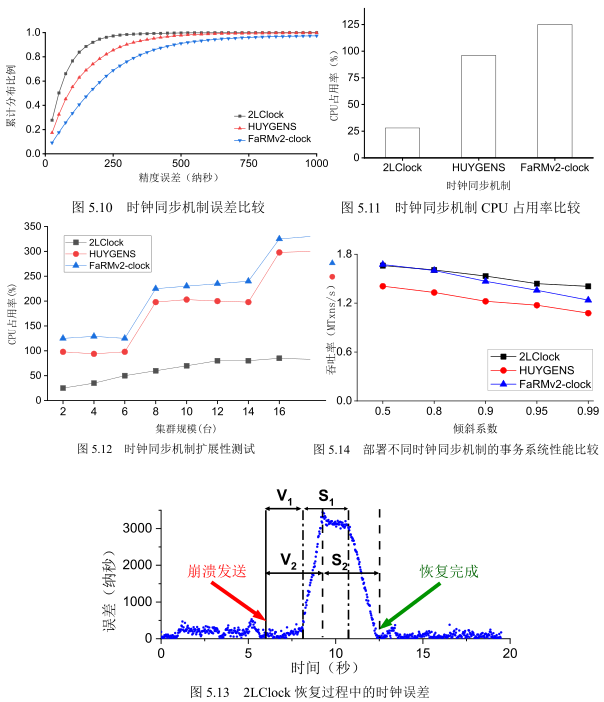

第5章 软硬件协同的高精度时钟同步机制
在公有云系统中，服务器数量急剧增加，单服务器内处理器核心数目也增长迅速。这些处理器需要统一的机制同步它们的时钟来支持云应用的运行和数据中心的维护。时钟同步对于公有云系统越来越重要，分布式事务[22-23]、数据库[18,57,143]、一致性快照 [66,152] 等应用服务对于时钟同步都有巨大的需求。例如在云存储系统支持的数据库服务中，时间序并发控制协议和多版本并发控制协议都借助时钟同步方案提供的时间戳来标记数据版本和执行事务处理协议。因此时钟同步机制对于事务处理非常重要。
目前，已经有很多时钟同步机制的工作 [63-64,153-154] 面向网络测量、拥塞控制等场景进行设计，形成了成熟的应用。但是，面向分布式事务的时钟同步工作仍存在一些问题。第一，时钟同步机制的同步精度低。在分布式事务系统中，后台的时钟同步任务需要足够的 CPU 资源实现同步的高精度。但是，事务处理也是 CPU 密集型应用，需要消耗大量的 CPU 资源用于检索数据、维护一致性等任务，因此前台的事务处理和后台的时钟同步会对 CPU 资源产生激烈的竞争，时钟同步受到来自前台任务的干扰导致同步精度下降。第二，时钟同步机制的接口易用性差，事务服务调用开销高。目前大部分网卡都装配了时钟发号器 [63,65,155]，主机端可以通过软件接口直接获得网卡的时钟信息。然而直接从网卡获得时钟效率低下，不能满足事务处理对于时钟服务高吞吐的要求。第三，部分时钟同步机制依赖对网卡的定制化修改，在云存储系统的数据中心内大规模部署存在难度。
本章设计了面向分布式事务的高精度时钟同步机制 2LClock。2LClock 面向分布式事务处理应用进行定制化设计，提供软硬件协同的时钟同步解决机制，具有精度高、易用性高的特点。2LClock 以网卡为中继节点，将云存储系统中 CPU 和 CPU 之间的时钟同步，拆解为 CPU 到网卡的时钟同步和网卡之间的时钟同步两个阶段。2LClock 将同步过程拆解为两个阶段，并对两个阶段同步任务的不同特点进行针对性处理，减少了网络栈的波动对同步的干扰，有效提升了同步精度。另一方面，相比于仅同步网卡时钟，增加的 CPU 到网卡的同步帮助事务处理高效地调用时钟同步服务，提升易用性。
为了进一步提升时钟同步的扩展性，2LClock 仍需要克服一个挑战，即网卡之间的时钟同步扩展性差，网络中根节点在网卡同步过程中 CPU 占用率高，难以高效扩展。网卡之间的同步需要 CPU 介入以完成同步探针的接收和发送任务。然而在胖树网络拓扑结构 [156] 中，根节点连接多个下层节点，随着网络规模扩大，其 CPU 占用率成为同步瓶颈。2LClock 的设计创新性地利用了 RDMA 技术不同发送模式的特点，通过多种发送原语的组合在同步关键路径上绕过了远端 CPU，提升了时钟同步的扩展性。本章工作实现了 2LClock 的代码并在 RDMA 集群上进行了测试，实验结果显示 2LClock 的时钟同步平均误差为 41 纳秒，相比已有工作误差最高降低了 87%，关键节点 CPU 占用率减少了 97%。本章工作的主要贡献如下：
本节将通过三个实验介绍面向分布式事务的时钟同步的研究动机。首先，通过时钟同步精度对事务处理吞吐的影响的实验，本节证明了时钟同步的高精度对于分布式事务处理至关重要。第二，本节通过对网卡时钟吞吐性能的实验，指出了仅同步网卡时钟方案的缺点，论证了两阶段同步的必要性。最后，通过同步探针波动实验，本节观察到不同的同步阶段影响同步精度的因素，启发了 2LClock 中拆分同步过程的设计。
时钟同步的精度对于分布式事务的处理十分重要，低精度时钟同步机制会导致分布式事务系统的事务中止率上升，最终导致系统吞吐下降 [22,157]。本小节进行了实验，通过调整时钟同步的精度，观察分布式事务系统吞吐的变化情况。事务系统选用第4章中基于时间序并发控制协议的事务系统 Aurogon，时钟同步协议选用了 2LClock，测试的负载选用了 YCSB [158]。由于最终实验结果显示 2LClock 的同步精度低于 100 纳秒，本小节的实验通过部署 2LClock 并人为地增加不同服务器之间时钟的偏移值（即时钟误差），来实现控制时钟同步精度的目的。本实验手动地将时钟精度误差从 1 微秒增加到 10 毫秒，在该配置下，2LClock 原有的时钟误差最多仅占设置偏移值的 10%，当偏移值进一步增加时 2LClock 的原有时钟误差不影响实验结果。
图5.1展示了事务系统吞吐依据时钟同步精度的变化情况。当同步精度为 1 微秒时，Aurogon 达到了吞吐最大值 0.74M 事务每秒。当时钟同步精度下降，误差上升，Aurogon 的吞吐持续下降。当同步精度为 100 微秒时，Aurogon 的吞吐下降到0.07M 事务每秒。最终，10 毫秒的时钟同步误差导致 Aurogon 的吞吐下降了 94%。该实验证明时钟同步的精度影响了分布式事务系统的吞吐，实现高精度的时钟同步机制非常重要。
目前大部分网卡 [63,65,155] 都装配了时钟发号器，支持主机端通过软件接口获取网卡的时钟信息。然而，直接获得网卡时钟的时间戳软件开销较大，难以满足事务处理场景的需求。以事务系统 Cicada [21] 为例，在 TPC-C [132] 负载下，单服务器吞吐约为 2.07M 事务每秒，单个事务延迟约为 6.5 微秒。在时间序并发控制协议中，每个事务在执行过程中都至少需要获取一个时间戳，因此时钟服务的吞吐和延迟对于事务处理非常重要。
图5.2和图5.3展示了网卡时钟的性能随并发访问的线程数增加而变化的情况。
网卡选用支持 RDMA 技术的 ConnectX-5 网卡，测量单个线程能请求到的时间戳吞吐以及请求时间戳的延迟。当并发线程数为 1 时，单线程能请求到的时钟服务吞吐为 89 万操作每秒，延迟为 1.0 微秒。随着并发线程增加，单线程时钟服务吞吐下降，延迟增加。当并发线程数达到 8 时，单线程能请求到的时钟服务吞吐为 12 万操作每秒，延迟为 7.8 微秒。实验说明，网卡的时钟服务无法满足事务系统的处理需求，且随线程增加扩展性差。
造成该现象的原因是网卡内部只有一个时钟发号器，访问线程数量增加并没有提升时钟服务的吞吐。当多线程并发访问网卡时钟时，排队与线程竞争导致了请求延迟的线性上升。因此，仅同步网卡时钟难以满足分布式事务的需求，增加 CPU 到网卡的时钟同步十分必要。
时钟同步机制和事务处理一起运行时，可能会受到事务处理的干扰而导致低精度。因此，时钟同步应该在 CPU 到网卡的同步（CPU-网卡）和网卡之间的同步（网卡-网卡）上采用不同的同步方案。以前的研究工作 [65-67,159] 忽略了 CPU-网卡同步和网卡-网卡同步之间的异构性，所以它们不能很好地满足分布式事务的需求。本小节通过同步探针波动实验进一步说明两个同步阶段的异构性。
观察：在分布式事务系统中，CPU—网卡中的同步探针比网卡—网卡中的同步探针经历的延迟波动更大，同步精度更低。
同步探针是时钟同步的基本单元。时钟同步机制通过定期收发探针确定两个时钟之间的时钟偏移值，并对时钟进行相应调整、同步。图5.4展示了探针同步两个时钟的过程，其中时钟 A 希望和时钟 B 进行时钟同步。首先，时钟 A 将探针发送给时钟 B，并记录下时钟 A 在发送探针时刻，时钟 A 的时间戳 $T_{AS}$。之后，时钟 B 收到了探针，并记录下时钟 B 在收到探针时刻，时钟 B 的时间戳 $T_{BR}$。时钟 B 在收到探针后，立刻将探针重新发送回给时钟 A，并记录发送时间戳 $T_{BS}$。最后，时钟 A 收到探针，记录下此时刻，时钟 A 的时间戳 $T_{AR}$。
设时钟 B 和时钟 A 的偏移值为 $\Delta$，即时钟 B 比时钟 A 快 $\Delta$。通过这四个时间戳可以计算出 $\Delta$ 的范围：
$$T_{BS} - T_{AR} < \Delta < T_{BR} - T_{AS} \tag{5.1}$$
进一步地，根据对称链路假设[64-65,67,159]，可以计算出 $\Delta = [(T_{BR} - T_{AS}) + (T_{AR} - T_{BS})]/2$。对称链路假设是指假设探针发送和返回的过程在链路上耗费延迟相同。然而，如果探针在整个收发的过程中耗费延迟过高，说明探针在发送或接收过程中可能经历网络波动、软件开销不均等问题，对称链路假设更可能被打破，无法准确计算出时钟偏移值。因此，探针的往返整体耗时代表了该探针能提供的同步精度。
本小节的实验发现，在 CPU-网卡同步中，探针经历的延迟波动更大，同步精度也更低。之前的工作 [65,67] 认为前台网络流量是导致探测不准确的主要原因，所以他们专注于消除链路噪声的影响，如在探针经过网络交换机时，使用智能交换机剔除数据包在交换机等待的时间来减少链路影响。但是，这在分布式事务处理场景中并不适用。分布式事务系统是 CPU 密集型而非网络密集型的应用，前台应用对于 CPU-网卡的同步过程影响更大。
| CPU-网卡同步 | 网卡-网卡同步 | |||
|---|---|---|---|---|
| 无前台负载 | 有前台负载 | 无前台负载 | 有前台负载 | |
| 中位延迟 (微秒) | 1.26 | 1.86 | 0.95 | 1.05 |
| 99.9% 分位延迟 (微秒) | 1.33 | 12.56 | 0.97 | 1.47 |
| 99.9% 分位/中位延迟比例 | 1.06 | 6.75 | 1.02 | 1.40 |
表 5.1 同步探针的往返延迟波动情况
表5.1 展示了同步探针在有无前台分布式事务应用的情况下，探针的往返延迟及波动情况。分布式事务系统选用了 DrTM+H [59]，它是所有 CPU 密集型的事务系统中，最大限度地运用 RDMA 技术填充网络带宽以加速分布式事务处理过程的系统。实验结果显示，当前台不运行事务处理应用时，CPU-网卡的同步探针和网卡-网卡的同步探针波动不明显，探针延迟的 99.9% 分位值/中位值的比值均小于 1.06，波动很小。当增加 DrTM+H 前台负载后，网卡-网卡探针延迟的 99.9% 分位值/中位值的比值为 1.4，仅比无负载情况上升了 37%，这表明即使是最先进的分布式事务系统的峰值网络流量也没有严重影响网络探针的稳定性。但是，CPU-网卡中探针的这一比值达到了 6.75，这是因为当 CPU 被前台事务处理抢占时，获取 CPU 时钟的时间戳会受到影响产生严重的波动。
受以上观察的启发，本章提出了一种使用两层映射的时钟同步机制 2LClock。2LClock 使用两层映射方案为每个服务器提供一个全局时钟，并进一步在 RDMA 技术的帮助下进行了实现。2LClock 同时实现了高精度、高易用性、高扩展性。
图5.5 展示了 2LClock 的时钟同步过程。在 2LClock 中，所有服务器的 CPU 时钟最终和一个基准网卡时钟同步，基准网卡时钟可以由用户指定。具体地，首先，每个服务器的 CPU 时钟先和自己本地的网卡时钟进行同步，将该映射关系记为 $F_0$。接着，所有网卡时钟通过网络组成一个树状结构，树的根节点为之前选定的基准网卡时钟，每个网卡时钟和其在树状结构中的父节点进行同步，将该映射关系记为 $F_i (i > 0)$。将以上两个过程放在一起，CPU 时钟通过 $F_0$ 映射得到本地网卡时钟，再通过多次映射 $F_i (i > 0)$，即在树状结构中向父节点同步，最终得到基准网卡时钟。
本节描述同步映射 $F_i$ 的设计。时钟之间的偏移并不是恒定不变的，由于时钟频率的差异 [65]，时钟之间的偏移可能随时间变化，所以时钟同步需要周期性地进行。同步映射的设计需要满足三个准则：（1）分时间片进行同步；（2）实时提供映射函数；（3）禁止出现时钟回溯的情况。首先，时钟同步的映射函数需要分时间片进行同步。单次同步探针容易受到网络波动、软件栈开销等影响，造成同步结果不准确。如果每次接收到同步探针就立即对时钟值进行修正，不仅会因为探针波动导致同步结果不准确，还可能造成时钟提供的时间戳不单调、出现时钟回溯的现象。因此，收集一个时间片内的所有同步探针，通过一些方法进行过滤筛选，最后得到准确的同步映射函数，是一个可以接受的方案。这个方案存在的问题是，收集同步探针并进行处理具有滞后性，无法实时提供一个映射函数给事务处理使用。具体地说，如果收集了第 $i$ 个时间片的探针，就只能在第 i+1 个时间片中进行过滤、计算等处理，最后在第 i+2 个时间片进行使用。为了生成实时的映射函数，就需要通过之前若干个时间片的映射函数预测出当前时间片的映射函数。最后，时钟回溯现象是指两个时间戳请求所得结果和物理时间上的顺序不一致。本章的工作主要解决的是对于同一个 CPU 核心时钟同步过程中分段函数交界处的时间回溯现象。绝大多数事务系统 [21,23,137] 要求单个核心获取的时间戳具备单调自增的属性。因此在设计映射函数时，需要保证映射分段函数在交界处的连续性，不能出现后一个时间片的起点小于前一个时间片的终点的情况。
基于以上考虑，2LClock 的时钟同步映射函数构造方式通过以下四个步骤完成。图5.6 展示了映射函数 $F$ 的构造过程，时钟 A 希望和时钟 B 进行同步。在构造映射函数之前，2LClock 以固定的长度 $T_d$ 为一个时间片切分时间轴。第一步，2LClock 对于每个时间片内部过滤掉问题探针，即完成延迟较高的探针，这是因为使用这部分探针可能会降低同步精度。接着将剩余探针通过拟合生成线性函数，代表这个时间片内的真实映射函数。值得注意的是，这个线性函数的拟合方式在CPU-网卡和网卡-网卡同步过程中并不相同，在之后的两小节会进行介绍。第二步，对于第 i 个时间片，即时间区间为 $[i·T_d,(i+1)·T_d]$，2LClock 选取该时间片的内真实映射函数的中点 $M_i$。第三步，构造预测点。2LClock 通过连接相邻的两个中点 $M_i$ 和 $M_{i+1}$，构造延长线交于时间点 $(i+4)·T_d$ 处，得到预测点 $A_i$。第四步，通过相邻的两个预测点 $A_i$ 和 $A_{i+1}$，得到第 $i+4$ 个时间片内的实时映射函数，即图5.6中菱形点组成的映射函数。
2LClock 通过延长线的方式获得实时的映射函数，这样设计包含两层考虑。一是第一步中产生的映射函数无法直接用于实时映射，二是通过延长线确定实时映射函数的起点和终点可以避免时间回溯现象的出现。2LClock 的时钟同步映射函数需要预热 4 个时间片才能使用，这个过程可以放在系统的启动阶段。在实现中 2LClock 选用的时间片长度为 2 秒。
本节讨论 CPU-网卡同步中一个时间片内的同步方法。在一个时间片中， 2LClock 首先通过探针测量和计算产生若干组映射对，表示服务器的 CPU 时钟和其本地网卡时钟之间的映射关系。然后，2LClock 用线性回归法拟合这些映射对，生成了 CPU-网卡同步阶段的线性映射函数。为了产生映射对，2LClock 启动了一个专用线程，用于在 CPU-网卡同步阶段定期查询本地网卡的时间戳，以获得映射对 $⟨T_c, T_n⟩$。这里 $T_c$ 表示 CPU 时钟的时间，$T_n$ 表示本地网卡时钟的时间。算法5.1展示了 CPU-网卡阶段的一个同步探针的实现过程。探针需要完成三次查询，产生三个时间戳：首先是查询 CPU 时钟得到时间戳 $T_{c1}$，接着是查询网卡时钟得到时间戳 $T_n$，最后是查询 CPU 时钟得到时间戳 $T_{c2}$。通过公式
$$T_c = \alpha · T_{c1}+ (1 - \alpha) · T_{c2}$$
计算出 $T_c$ 的值，并得到映射对 $⟨T_c, T_n⟩$。这里 $\alpha$ 是一个属于 [0,1] 范围内、提前离线设置的参数，该参数的含义是网卡时钟查询的上行延迟和下行延迟的比值。在一个同构的集群中，不同服务器的 $\alpha$ 值是相同的，且只要都选择同一个 $\alpha$ 值，最终的 CPU 时钟的相对偏移不受 $\alpha$ 值的影响。
在收集到一个时间片内的所有映射对 $⟨T_c, T_n⟩$ 后，2LClock 会过滤掉探针执行延迟远远偏离正常值的映射对。探针执行延迟即 $T_{c2} - T_{c1}$。具体地，2LClock 将阈值设置为一个时间片内探针执行延迟中位值的 2 倍，大于该阈值的映射对都将被过滤。时钟同步和事务处理之间的 CPU 资源竞争会使一些映射对的执行延迟达到毫秒级别。因此，过滤掉离群的映射对可以有效提高 CPU-网卡同步过程中映射函数的准确性。
算法 5.1 CPU-网卡同步算法
1 Function 探针获取()
2 Tc1 = 请求CPU时钟获得时间戳()
3 Tn = 请求网卡时钟获得时间戳()
4 Tc2 = 请求CPU时钟获得时间戳()对于网卡-网卡同步过程，2LClock 通过三个步骤在每个时间片中生成线性函数用于映射。首先，2LClock 通过同步探针生成一组本地网卡时钟和父节点网卡时钟的映射对。2LClock 通过从本地网卡向目标网卡发出探针得到一个四元组 $⟨T_{AS}, T_{BR}, T_{BS}, T_{AR}⟩$，并通过计算得到相应的映射对 $⟨T_n, T_g⟩$。第二步，2LClock 使用支持向量机 [160] （support vector machine，SVM）来过滤映射对中的离群值，避免探针遭遇网络波动导致同步不准确。最后，2LClock 借助 SVM 对于每个时间片生成线性函数用于同步映射。
本节将先介绍网卡-网卡同步阶段的网络拓扑结构组织方式（5.3.4.1节）。接着对于单个探针，2LClock 使用了 RDMA 原语组合以及异步批量传输时间戳（5.3.4.2节）的方式提升网卡-网卡时钟同步的扩展性。最后，本节将介绍利用 SVM 过滤异常探针的过程（5.3.4.3节）。
2LClock 采用树形结构来构筑时钟同步网络。树的根节点是基准网卡时钟，集群内的所有网卡时钟都最终和基准网卡时钟进行同步。树中的每一条链路都是同步链接，用于子节点向父节点同步网卡时钟。2LClock 构造了一个$k$叉树来组织同步链接。每个网卡都向其父节点网卡发出探针，因此每个网卡最终都能获得与参考网卡时钟同步的映射对。$k$值的选取需要考虑两方面的因素，即同步误差和扩展性。一方面，每一次同步都会引入一个额外的同步误差 [67]，树的高度决定了整个集群最大的同步误差，因此 2LClock 需要控制树不能过高。另一方面，单个父节点所连接的子节点数目决定了时钟同步的扩展性。单个父节点需要同时接收来自$k$个子节点的同步请求并作出及时响应，在网卡-网卡时钟同步中，已有方案 [66] 依然需要在关键路径上引入父节点的 CPU 进行相应处理。当$k$值很大时，不仅父节点的 CPU 占用率会增加，还会导致父节点的网卡时钟负担过重。因此，设计合适的$k$值十分重要。在 2LClock 中，我们将$k$值设置为 40 以限制同步误差，那么只需要一个三层的 40 叉树就可以使 2LClock 在一个 1500 台左右服务器的集群中工作$(1 + 40 + 40^2 = 1641)$。在三层的 40 叉树中，单个网卡最多需要两跳就可以基准时钟进行同步，该误差处于可控范围，并且支持扩展到 1641 台服务器已经可以基本满足单个机房的需求。
为了降低父（根）节点在网卡-网卡同步过程中的 CPU 占用率，2LClock 采用了 RDMA 原语组合的方法。首先介绍本章节发现的 RDMA 技术的特征。
特征 1：RDMA在收发请求时可以在请求完成时自动记录请求完成时间。
RDMA 收发请求采用异步方式实现，包括申请队列对（queue pair，QP）以及完成队列（completion queue，CQ）。当需要发送或接收请求时，用户可以将请求放入 QP 中。当请求完成后，RDMA 会在完成队列中生成对应的生成完成队列项（completion queue entry，CQE）。迈洛斯公司第五代 RDMA 网卡 ConnectX-5 及其对应的驱动提供了扩展完成队列（ibv_cq_ex）的功能，支持在 CQE 中记录发送和接收请求完成的网卡时间戳，即在请求完成的同时获取 RDMA 网卡时钟的时间戳。这个接口允许在主机内存中缓存这些网卡时间戳，无需 CPU 主动请求网卡时钟。
特征2：扩展完成队列对于不同发送模式的请求记录时间戳的时机不同。
RDMA 有多种传输模式 [12,14]，包括 RC 模式和 UD 模式。具体来说，RC 模式使用确认 ACK 来确保可靠的传输，而 UD 模式则删除了 ACK。之前的工作 [58] 探讨了在云存储系统内部使用 UD 模式进行数据传输的可行性及优势。值得注意的是，扩展完成队列在 RC 模式下记录的时间戳是发送请求的 ACK 消息传回网卡的时间，而在 UD 模式下记录的时间戳是发送请求离开网卡的时间。本小节通过一个实验验证了这个特性。
图5.7展示了实验过程，实验是将发送请求的目的地址设置为本地网卡，观测两种模式下，发送请求和接收请求完成后生成的时间戳。在 RDMA 中，发送请求需要和接收请求一一对应，一个发送请求会消耗掉接收端的一个接收请求。在 RC 模式下，将数据发送到本地网卡，发送请求生成的完成时间戳为 $T_{RCsend}$，本地网卡的接收请求的完成时间戳是 $T_{RCrecv}$；在 UD 模式下，发送请求生成的完成时间戳为 $T_{UDsend}$，本地网卡的接收请求的完成时间戳是 $T_{UDrecv}$。经过多次实验发现，存在 $T_{RCsend} > T_{RCrecv}$ 以及 $T_{UDsend} < T_{UDrecv}$ 的现象。结合两种发送模式的不同，可以得出结论：扩展完成队列在 RC 模式下记录的是发送请求的 ACK 消息传回网卡的时间，而在 UD 模式下记录的是发送请求离开网卡的时间。
RDMA 原语组合。接下来图5.8展示如何生成一个探针并计算出一个映射对。网卡 A 要和网卡 B 进行时钟同步，需要得到四元组 $⟨T_{AS}$, $T_{BR}$, $T_{BS}$, $T_{AR}⟩$，四元组的元素分别代表探针离开网卡 A、到达网卡 B、离开网卡 B、到达网卡 A 的时间。2LClock 先通过扩展完成队列将一个 UD 模式下的发送请求由网卡 A 发送给网卡 B。此时两端的扩展完成队列会记录两个时间戳 $T_{AS}$、$T_{BR}$，分别代表 UD 发送请求离开网卡 A、到达网卡 B 的时间戳。接着，2LClock 通过扩展完成队列将一个 RC 模式下的发送请求由网卡 A 发送给网卡 B。此时，两端的扩展完成队列会记录两个时间戳 $T_{BS}$、$T_{AR}$，分别代表 RC 发送请求的 ACK 消息离开网卡 B、到达网卡 A 的时间戳。如果 UD 模式下的发送请求遭遇了丢包等现象，2LClock 会将这个探针作为异常探针丢弃。这种情况在实际数据中心中很少发生 [58]。
异步批量传输时间戳。网卡 B 通过定期轮询扩展完成队列，批量获得现有的时间戳 $T_{BR}$ 和 $T_{BS}$，并将他们传输到网卡 A 所在的服务器。由于时钟同步分时间片进行计算映射函数，所以异步传输只需要在每个时间片结束后进行。网卡 B 的服务器收到这些时间戳后会进行组合，组成四元组并交由 SVM 进行计算。
由于 2LClock 将$k$叉树的$k$值设置为 40 以减少引入的同步开销，时钟同步的扩展性成了需要客服的难题。2LClock 通过对于探针的设计减少了父节点 CPU 占用率。具体来说，这个设计带来了两个好处。第一，使用扩展完成队列获取准确的时间戳，相比使用一个单独的 CPU 核心轮询网络接口 [66]，节省了 CPU 资源。第二，RC 和 UD 发送模式的组合成功地将发送探针的任务从父节点服务器卸载到子节点服务器。
在网卡-网卡时钟同步中，2LClock 利用 SVM 批量处理四元组，包括过滤异常探针和构造得到指定时间片内的映射函数。对于四元组，2LClock 通过公式5.1中的结果，可以得到两个点，坐标分别为 $⟨T_{AS}, T_{BR} - T_{AS}⟩$ 和 $⟨T_{AS}, T_{BS} - T_{AR}⟩$，分别代表映射函数的上界和下界。
SVM 是一种广泛应用的、针对线性和非线性分类场景的监督学习方法。线性 SVM 的输入数据的格式是 $⟨x_i, l_i⟩ (1 ≤ i ≤ N)$，其中 $N$ 为输入样本数量，$x_i$是一个二维空间坐标，$l_i$是标签类型，在本使用场景中可以是"上界"或者"下界"。
该方法对相似标签的点进行分类，用一个最大边际的超平面将它们分开，即这个超平面与任一标签最近点的距离是最大的。在本章的方法中，SVM 用于分离上界点和下界点。SVM 相比于其它线性回归方法不会受到噪声点的影响。这些噪声点会影响线性回归中拟合函数的计算结果，但是 SVM 只寻找距离最大的超平面，只要上界点和下界点构成的"边界线"存在，噪声点就不会影响 SVM 最后的结果。
另一方面，SVM 找到的超平面所构成的映射函数，也符合对称链路假设。理想情况下，SVM 寻找的超平面是两条"边界线"的中线。虽然在网络波动会导致单次探针测量的对称链路假设不成立，但是网络通信延迟存在下界，多次测量后处于"边界线"的点符合对称链路假设，因此 SVM 找到的超平面就是对称链路假设下的映射函数。2LClock 将这个线性映射函数作为该时间片内的真实映射函数。
2LClock 使用了一个两阶段的机制来容忍服务器崩溃的故障。所有服务器通过心跳机制确认其在树形结构中的父节点是否故障。如果一个服务器检测到父节点出现了故障，该服务器会转而向树形结构中的另一节点进行同步，即在同步树中选择一个新的父节点。父节点的选择方式优先满足不增加同步树的深度，即该服务器选择原父节点的兄弟节点作为新的父节点。由于 2LClock 中对降低 CPU 占用率做了大量工作，因此这部分同步任务的增加可以接受。新的父节点与子节点会采取一个两阶段的恢复过程在同步树中建立新的链接以及预热时钟映射函数。
图5.9展示了一个子节点 A 从原父节点 B 切换到新的父节点 C 的过程。在这个过程中 A 的时钟一直保持单调自增的属性。本例仅涉及网卡-网卡同步过程，CPU网卡同步过程只要叠加在这层映射上即可，故不作讨论。记映射函数为 $F$。当 A 检测到 B 在 $t_1$ 时发生故障，A 将立即连接到新的父节点 C，并向 C 发送探针以构建一个新映射函数 $F_C$ 与 C 进行时钟同步。时钟同步需要预热阶段，在 $t_2$ 时刻 $F_C$ 的预热完成。这里出现了一个问题，是在 $t_1$ 到 $t_2$ 阶段，由于 $F_C$ 正在预热，并没有新的映射函数供 A 使用。因此 2LClock 在这一空缺阶段使用了一个虚拟的时钟映射函数 $V_B$，这个映射函数是通过延长旧映射函数 $F_B$ 而得到的。
为了避免时间回溯现象，当 $F_C$ 预热完成后，如果存在 $V_B(t_2) > F_C(t_2)$，需要增加一个修正值以保证时间的单调递增。但是，不同服务器增加不同的修正值，会对 2LClock 的时钟精度造成较大损害。为了减少增加修正值的影响，2LClock 会增加一个平滑阶段，在未来的时间片内均摊地减去增加的修正值。图5.9显示平滑阶段从 $t_2$ 持续到 $t_3$，这一阶段的映射函数是 $S_C$。在这一阶段，修正值会均匀地被减少到 0。在 $t_3$ 时刻之后，2LClock 就正式完成了两阶段的恢复，回到了正常状态。
首先，本节将介绍实验配置和测量方法。接着，将从同步精度、调用开销、CPU 占用率等角度比较 2LClock 与已有时钟同步机制，通过实验展示 2LClock 的性能优势。
实验环境设置。所有的实验在一个拥有 5 台服务器节点的集群中完成。每台服务器有两个十核的 Intel Xeon Silver 4210R 处理器以及 64GB 的内存。服务器运行的操作系统版本是 CentOS 7.6。每台服务器装配了一张 Mellanox 五代网卡 ConnectX5 MCX556A 100Gbps Infiniband NIC，所有网卡连接到一台 Mellanox SB7890 Infiniband 交换机上。
对比时钟同步机制。本节主要将 2LClock 和两个最新的时钟同步系统进行比较：Huygens [65] 和 FaRMv2-clock [66]。Huygens 对于多台服务器的场景在低 CPU 占用率下同步了它们的网卡时钟，FaRMv2-clock 直接从 CPU 时钟获取时间戳进行同步。在比较过程中，本节移除了 FaRMv2-clock 设计中时间戳全局单调递增的属性，即跳过了不确定等待的阶段。这是由于本章设计的时钟同步只需要满足分布式事务可串行化的隔离等级，这样的移除对于比较 FaRMv2-clock 的性能也更加公平。
精度测量方法。本节采用"自同步"的方法，将基准时钟设置到被测试时钟自身上来测量时钟精度。通过将两个时钟实例运行在同一个 CPU 上，让两者和第三方时钟进行同步并测量两者之间的误差。由于两个时钟运行在同一个 CPU 上，对于同一个 NUMA 节点的核心它们的时钟是一致的，因此测得偏移即为时钟同步的误差。具体的过程如下：两个时钟实例$(C_1, C_2)$在同一台服务器的同一个 NUMA 节点上运行，分别和运行在另一台服务器上的时钟 $C_3$ 同步。$C_1$ 和 $C_2$ 之间的误差由于运行在同一台服务器上本应是 0。因此实验把 $C_1$ 和 $C_2$ 之间误差的绝对值作为时钟同步的精度。
图5.10展示了三种时钟同步机制的误差累积分布图，同步误差每 5 毫秒进行一次测试，将所有的误差测试结果按大小排序形成了误差的累计分布。测试时钟同步机制的同时前台运行着分布式事务处理应用 Aurogon。2LClock 的平均误差值是 41 纳秒。作为比较，Huygens 的平均误差值是 83 纳秒，FaRMv2-clock 的平均误差值是 315 纳秒。2LClock 相比 Huygens 和 FaRMv2-clock 分别减少了 51% 和 87% 的平均误差，这得益于 2LClock 拆分了同步阶段并筛除了异常探针。FaRMv2-clock 直接使用 CPU 时钟进行同步，极易受到主机端网络栈波动的影响，且该方法没有采用分时间片处理时钟同步的方式，受波动影响的探针直接影响了同步精度。Huygens 对网卡时钟进行同步，利用网络效应减少时钟同步误差。但是由于网卡时钟的吞吐有限，请求可能存在阻塞排队的现象，应用无法及时获得时间戳，Huygens 的时钟同步精度相比 2LClock 误差更大。另一方面，2LClock 的 99% 分位精度相比 Huygens 和 FaRMv2-clock 分别降低了 2.3 倍和 31 倍。当前台运行了事务处理应用时，同步探针受到网络栈波动的影响由于 CPU 竞争变得更大，因此 FaRMv2-clock 的同步精度在极端情况下变得更差。
| 时间同步机制 | 2LClock | FaRMv2-clock | Huygens |
| 调用延迟（纳秒） | 208 | 212 | 3300 |
表 5.2 时钟同步机制调用开销
表5.2中展示了在真实事务系统中运行时不同时钟同步机制的调用开销，调用开销指事务系统调用时钟接口产生的延迟。调用 2LClock 获得时间戳的延迟是 208 纳秒，而 Huygens 的时钟同步开销为 3.3 微秒，调用开销相比降低了 94%。2LClock 和 FaRMv2-clock 由于进行了 CPU-网卡阶段的同步，分布式事务可以直接请求 CPU 时钟获得时间戳，因此时钟调用开销低。另一方面，Huygens 由于仅完成了网卡-网卡同步，需要分布式事务请求网卡时钟获得时间戳。由于网卡时钟内仅存在一个时钟发号器，并发地对网卡时钟访问不仅会造成请求阻塞、延迟增加，还有可能影响时钟同步的精度。
本小节首先通过实验比较了时钟同步机制的 CPU 占用率，接着通过模拟实验测试了时钟同步机制在更大规模集群上的扩展性。实验测试了时钟同步机制中父节点的 CPU 占用率。本实验的集群共有 5 台服务器节点，以其中 1 台作为根节点，其余 4 台服务器以星型结构连接在根节点服务器上。
图5.11展示了实验结果，2LClock 的父节点 CPU 占用率为 28%，相比之下 Huygens 的 CPU 占用率为 96%，FaRMv2-clock 的 CPU 占用率为 125%。CPU 占用率是根据占用的 CPU 核数来计算的，CPU 占用率 100% 相当于任务执行完全占用了一个 CPU 核。2LClock 的 CPU 占用率主要来源于两个方面，一是 CPU-网卡同步过程中的 CPU 定期向网卡时钟发送探针请求时间戳，二是网卡-网卡同步中父节点将数据异步传输给各个子节点。2LClock CPU 占用率低的优势主要来源于 RDMA 原语组合对第二部分开销的降低。相对地，Huygens 和 FaRMv2-clock 都需要一个独立的 CPU 核维护一个专用的线程，用于在父节点轮询可能接收到的来自子节点的同步探针，及时记录时间戳并将探针发回给子节点。
第二个实验展示了时钟同步机制的扩展性。由于缺少更大规模的 RDMA 集群，本小节采用模拟实验的方式验证时钟同步的扩展性。时钟同步的扩展性主要测量当父节点连接更多子节点时 CPU 占用率的变化情况。本小节将图5.12实验中该部分的 CPU 占有率依照子节点数进行进一步扩展，以模拟 CPU 占用率。同时，实验发现，在现有公有云存储系统中大量使用的基于轮询的方法（即 FaRMv2-clock 和 Huygens ）中，一个独立的 CPU 核能支持的同步任务是有限的，当子节点数超过 7 个时同步精度就会出现严重地下降，因此需要增加 CPU 核心用于轮询任务。此时，CPU 占用率也随之增加。
图5.12展示了时钟同步的扩展性。当集群规模增加时，2LClock 的父节点 CPU 占用率相比 Huygens 和 FaRMv2-clock 上升更慢。另一方面，2LClock 的同步任务并不需要专用的 CPU 核完成，它的异步传输任务也可以用其它空闲的应用线程来完成，而 Huygens 和 FaRMv2-clock 随着集群规模扩大需要更多专用的 CPU 核心来完成时钟同步，部署灵活性更差。
本小节测试了 2LClock 处理一个父节点时钟崩溃的情况。本实验沿用了5.4.2小节中测试时钟精度的方法，时钟 $C_1$ 和时钟 $C_2$ 原本和 $C_3$ 进行同步，在 $C_3$ 崩溃后转而跟 $C_4$ 进行同步。图5.13展示了这个过程中 $C_1$ 和 $C_2$ 两个时钟之间误差的变化。
2LClock 在第 6 秒时发现了 $C_3$ 的崩溃。之后 $C_1$ 和 $C_2$ 开始了它们各自的空缺阶段（$V_1$ 和 $V_2$）。在这个阶段中，$C_1$ 和 $C_2$ 分别和 $C_4$ 建立新的链接并开始预热映射关系。尽管 $C_3$ 已经崩溃，此时 $C_1$ 和 $C_2$ 仍沿用之前和 $C_3$ 同步的映射函数。
$C_1$ 花费了 2.1 秒先完成了空缺阶段并开始和 $C_4$ 进行同步。为了平滑修正值， $C_1$ 开始了平滑阶段 $S_1$。在该阶段，时钟误差最高达到了 3.5 微秒。之后 $C_2$ 也开始了平滑阶段 $S_2$，此时 $C_1$ 和 $C_2$ 两个时钟的偏差稳定，这是因为两者以相同的速率平滑修正值。当 $C_1$ 完成 $S_1$ 阶段后，时钟偏差有一个极速的下降，在 $S_2$ 结束时，两个时钟的偏差又回到正常状态。整个过程耗时 6.4 秒。
本小节测试时钟同步机制对分布式事务系统的影响。本实验将不同的时钟同步机制部署到分布式内存事务系统 Aurogon 上，测试事务系统的吞吐。测试使用的负载是 YCSB [158]，具体的测试配置见4.4.1节中的描述。
图5.14展示了 YCSB 负载中倾斜系数变化的情况下事务系统的吞吐情况。当倾斜系数为 0.5 时，事务系统内部的数据热点不集中，2LClock 和 FaRMv2-clock 的性能差距不大，两者的吞吐均为 1.66M 事务每秒。与此同时，部署了 Huygens 的 Aurogon 吞吐仅为 1.41M 事务每秒，相比前两者下降 15%。这是由于 Huygens 的接口调用开销太大，事务系统的瓶颈从并发控制协议、网络带宽转移到了时钟服务的获取上。当倾斜系数增加，事务系统的数据热点更集中，热点数据的访存更密集。当倾斜系数为 0.99 时，部署了 FaRMv2-clock 的 Aurogon 的吞吐为 1.24M 事务每秒，而 2LClock 的吞吐为 1.41M 事务每秒。这是因为当数据热点集中时，需要精准的时钟服务为事务处理提供准确的执行顺序，低精度的时钟服务会导致事务系统中止率上升，吞吐下降。
针对时钟同步机制扩展性差、同步精度低的问题，本章提出了软硬件协同的时钟同步机制 2LClock。2LClock 将时钟同步过程拆解以降低网络栈对同步精度的影响。2LClock 充分发掘 RDMA 网卡的智能化特性，借助 RDMA 不同发送模式的组合实现同步操作，在时钟同步的关键路径上绕过了远端 CPU，使得 CPU 不再成为时钟同步的扩展瓶颈。此外，2LClock 是第一个系统性地归纳 RDMA 网卡时钟记录功能的工作。实验结果显示，2LClock 的时钟同步平均误差低至 41 纳秒，相比已有工作降低了 87%，关键节点 CPU 占用率减少了 97%。